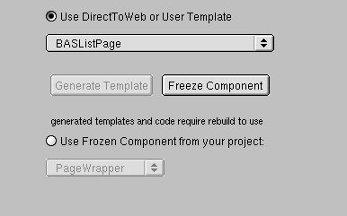
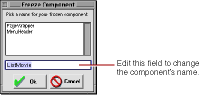

PATH
Documentation > WebObjects 4.5 >
Tools and Techniques
Generating Components
When you have worked with the Web Assistant and customized your pages to your liking, you may still want to add more features to your application. To do so, you can "freeze" a page; that is, save it as a WebObjects component. When you do this, the component becomes part of your project and is no longer created "on the fly" by Direct to Web. This has several advantages:
-
You have complete control over the visual appearance of the page. You can add any static or dynamic HTML elements you like, using a tool such as WebObjects Builder.
-
You can add functionality to the page by editing the component's Java code, as well as by editing the bindings of the page's dynamic elements.
-
Your application's performance improves because Direct to Web doesn't have to go through the process of creating the page "on the fly."
The main disadvantage of generating components is that you lose the ability to modify settings with the Web Assistant since the entity, property settings, and page configuration are stored directly in the generated component. To modify the page, you must edit the component or its corresponding .java
file. Therefore, you should try to get your settings as close as possible to what you want before generating the component.
To generate a component:
-
Click the Expert Mode button at the bottom of the Web Assistant to enter Expert mode.
-
Click the Generate tab at the top of the Web Assistant.

-
Select the task and entity corresponding to the page you want to generate.
You can't select "*all*" to generate multiple components. You must generate the components one at a time.
-
In the Advanced Options group of controls, make sure the "Use DirectToWeb or User Template" radio button is selected.
-
Click Freeze Component.
The Freeze Component window appears. It contains a text field with a default name for your page (the page name followed by the entity name). You can edit the name if you choose.

-
Click the Ok button.
Direct to Web generates a component (with extension .wo
) and a corresponding .java
file and adds them to your project. You may have to wait a few moments for this process to complete. Your settings are automatically saved.
-
Rebuild your project.
If you decide not to use the frozen component and have Direct to Web build the page "on the fly," select the "Use DirectToWeb or User Template" radio button.
When you generate a page and click Update, the browser's current page doesn't reflect the changes. To use the new component, you must rebuild the application, relaunch it, and then navigate to a new instance of the page. For example, if the current page is a Movie query page, and you use the Web Assistant to freeze it, you must rebuild the project with the frozen component, then launch the application and navigate to a new instance of Movie query (by clicking Build Query); the new instance uses the frozen component.
The generated component is like any other WebObjects component. You can edit your component graphically using WebObjects Builder. You can also examine the HTML and bindings (.wod
file) of the new component in Project Builder.
Direct to Web also generates Java code for your component, which you can modify appropriate to your needs. Each component implements an interface that is appropriate to the page: QueryPageInterface, ListPageInterface, InspectPageInterface, and EditPageInterface. For example, the QueryMovieRole.java
file shown below implements the QueryPageInterface. For example, it contains an action method called queryClicked
that returns a component when the Query DB button is clicked. (Note that the component's submit button is bound to queryClicked
in QueryMovieRole.wod
.)
© 1999 Apple Computer, Inc. – (Last Updated July 27 99)